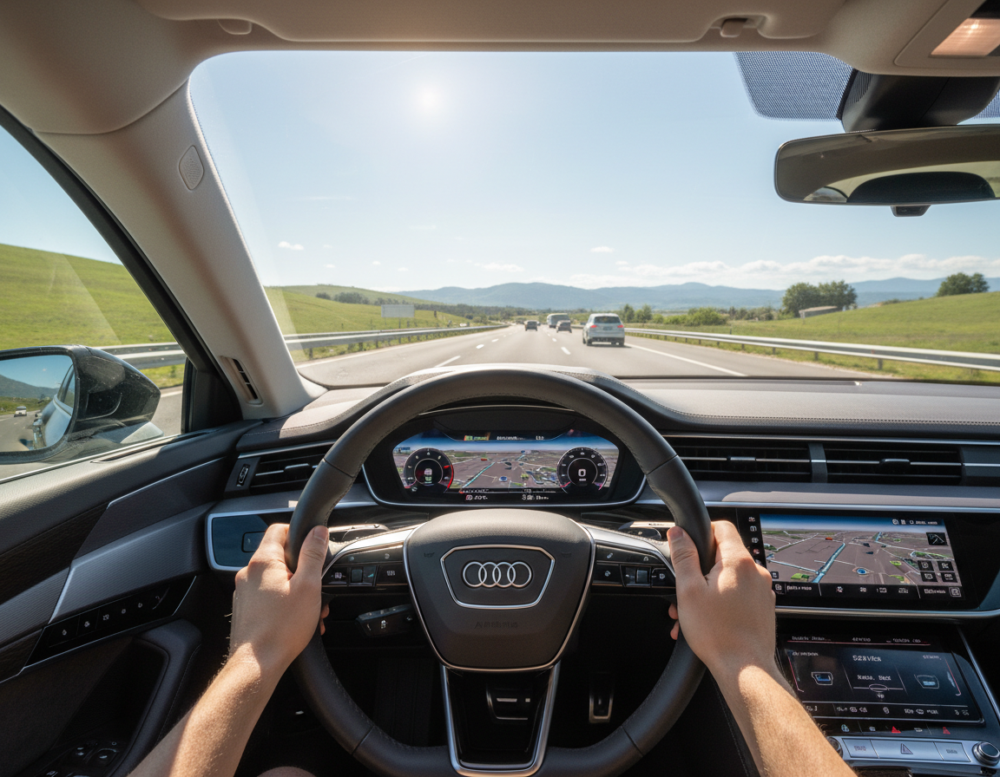

[Court]
[Address]
Need your ticket dismissed?
If you received a traffic ticket through
[Court Name] in [City, State],
the court may require you to complete a traffic
school program or a defensive driving course

Welcome to the GoToTrafficSchool.com Court Directory. At GoToTrafficSchool.com we want to make sure that you have all the information you need in order to complete your [Court] [State] Online Traffic School, Online Defensive Driving, Online Ticket Dismissal, Online Driver Improvement or Online Point Reduction course in a timely manner.
| Feature | GoToTrafficSchool.com | Other online traffic schools |
|---|---|---|
| State Approved | Yes | Varies |
| 100% Online | Yes | Most |
| Mobile Friendly | Yes | Varies |
| Self Paced | Yes | Most |
| Instant Enrollment | Yes | Varies |
| Designed Specifically for California Drivers | Yes | No / Varies |
| Clear Upfront Pricing | Yes | Varies |
Testimonials
Do not just take our word for it. See what our satisfied customers have to say.
"I like the course just the way it is."
"I think it is good the way it is."
"It was an easy program to follow and I liked that I could finish at my own pace."